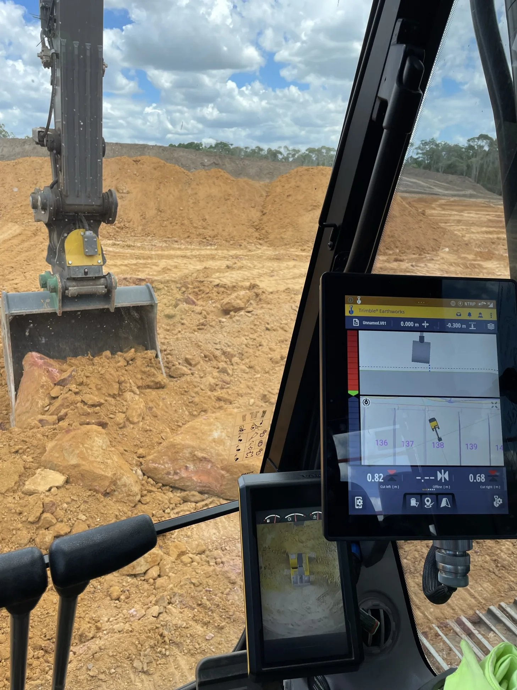
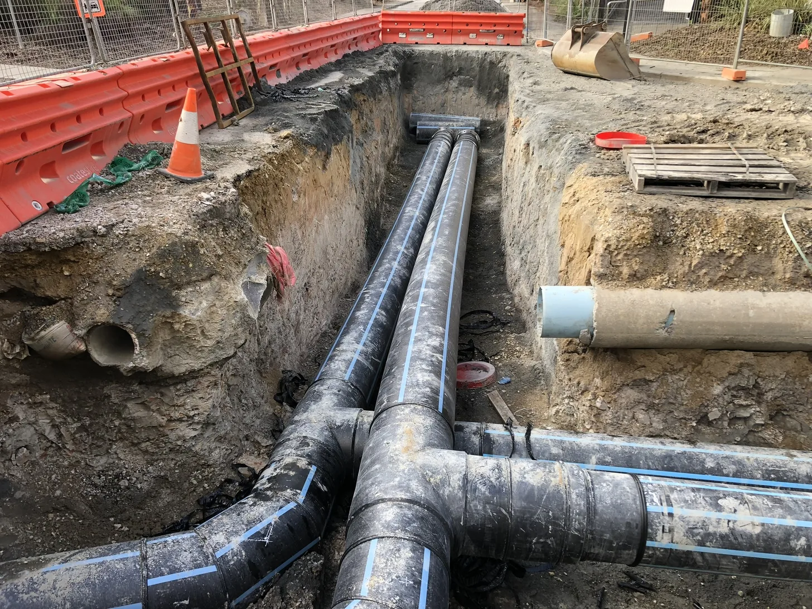
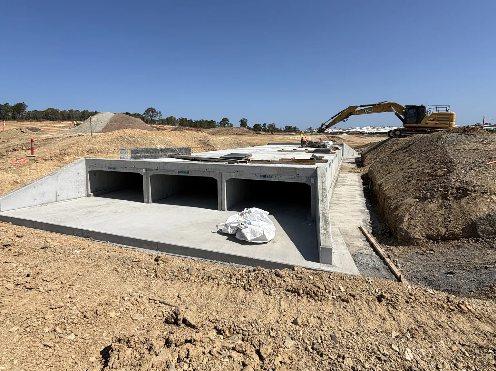
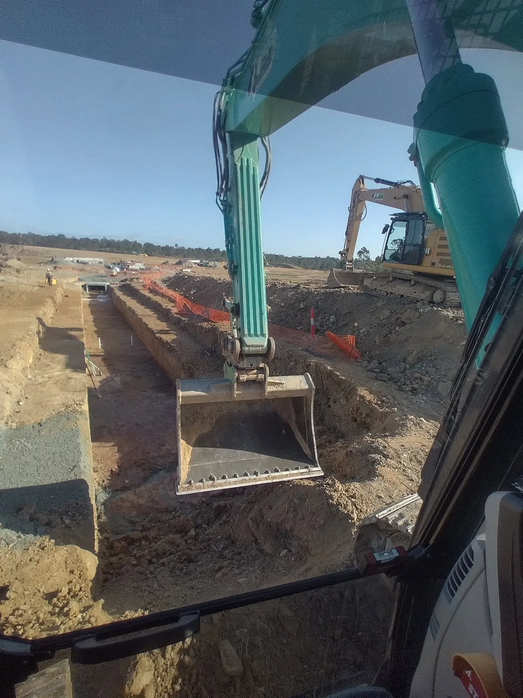

Bulk earthworks, site preparation and detailed excavation
Structured around trimming, GPS-enabled excavation and dependable site preparation for exact grades and program certainty.
Services
LED Plant & Civil delivers dependable civil works, earthworks, underground service installations and plant hire solutions across South East Queensland.

Services overview
LED combines civil works, underground service installation and plant hire capability to support early works through to handover.
Structured around trimming, GPS-enabled excavation and dependable site preparation for exact grades and program certainty.
Stormwater, sewer and water-main installations delivered with disciplined trenching, pit construction and compliant reinstatement.
Excavators, posi-tracks, moxis and support equipment available to reinforce civil delivery on active projects.

Underground services
LED delivers technically precise installation of stormwater, sewer, and water-main infrastructure, applying compliant trenching, pipe embedment, pit construction and alignment controls.
Our pipelaying teams install PVC, PE and concrete pipe systems to industry specifications, supported by rigorous testing, quality assurance and disciplined excavation practices for reliable, long-term network performance.
Earthworks
LED delivers precise detailed excavation using advanced Topcon, Kommand and Trimble Earthworks GPS systems to achieve exact grades, trench profiles and structural excavation tolerances.
Our operators integrate digital design models with disciplined earthmoving methodologies, ensuring compliant trenching, efficient material management and industry-standard accuracy for complex civil and underground infrastructure works.

Drainage
LED delivers custom drainage solutions including engineered slabs, box culvert installations, bespoke headwalls and large-scale stormwater pits.
Our team constructs tailored reinforced concrete and pre-cast structures to specification, integrating accurate excavation, formwork, pit construction and hydraulic design requirements to ensure compliant, high-capacity drainage performance on complex civil sites.

Plant hire
LED provides modern, fully maintained plant supported by experienced operators, delivering reliable wet and dry hire solutions that ensure efficient and high-performance outcomes on any civil project.
Project enquiries
Contact LED Plant & Civil to discuss pipelaying, excavation, drainage works or plant hire requirements.